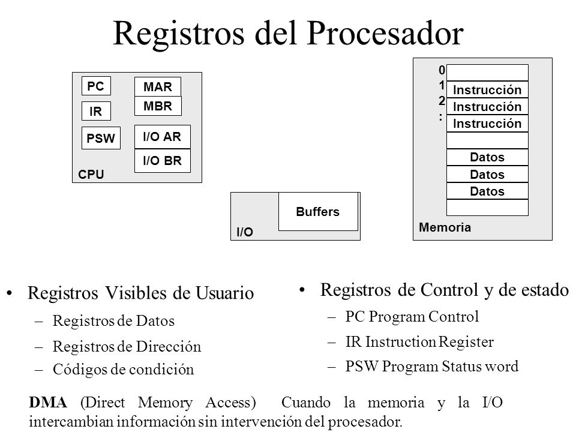
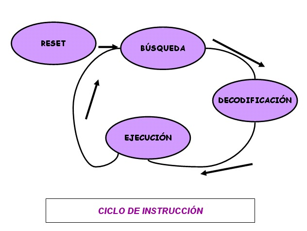
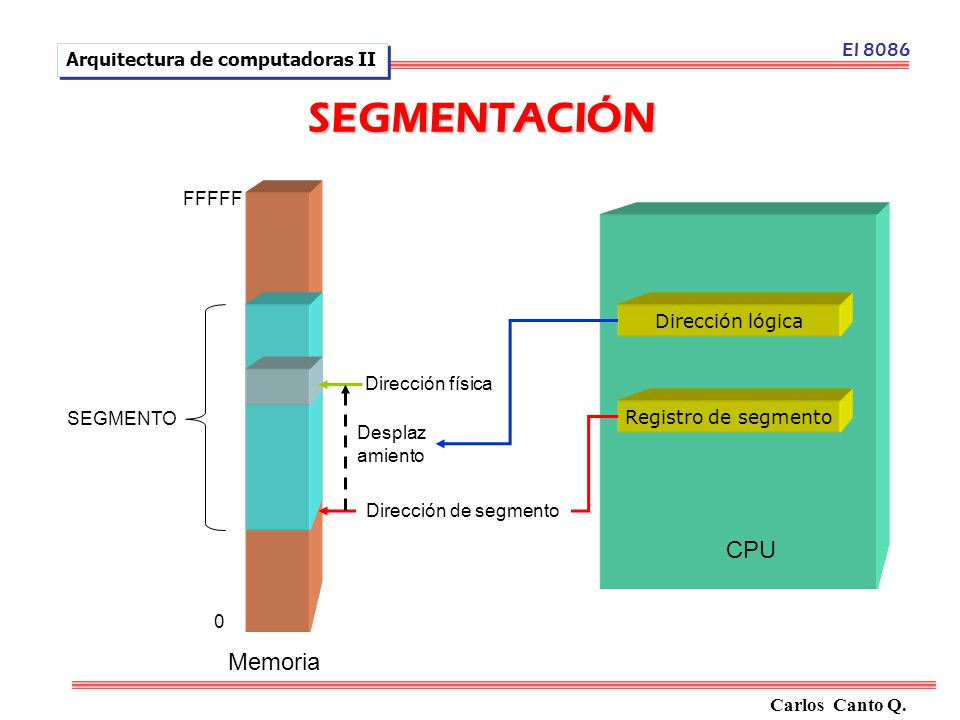
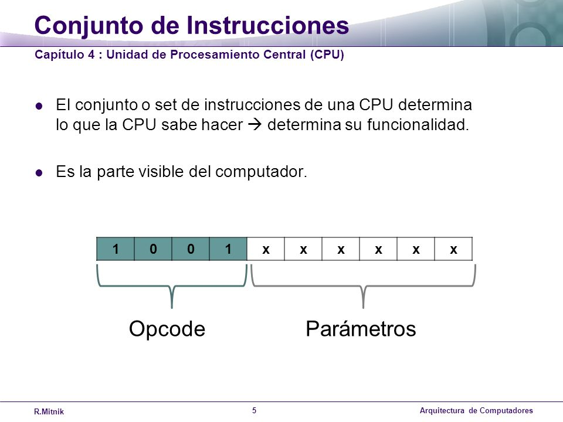
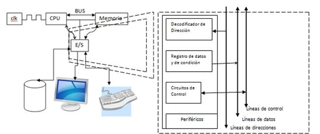
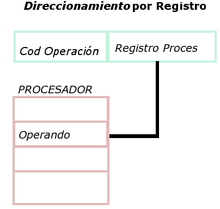

UNIDAD 2
"Estructura y Funcionamiento Del CPU"
2.1 Organizacion del procesador
Un procesador, incluye tanto registros visibles por el usuario como registros de control/estado. Los registros visibles por el usuario pueden ser de uso general o tener una utilidad especial, mientras que los registros de control y estado se usan para controlar el funcionamiento del procesador, un claro ejemplo es el contador de programa Los procesadores utilizan la segmentación de instrucciones para acelerar la ejecución. La segmentación de cauce se puede dividir en ciclo de instrucción en varias etapas separadas que operan secuencialmente Captar instrucciones: El procesador lee una instrucción de memoria (registro, cache o memoria principal). Interpretar instrucción: La instrucción se codifica para determinar qué acción es necesario. Captar datos: La ejecución de una instrucción puede exigir leer datos de memoria o de un módulo de E/S. Procesar datos: La ejecución e una instrucción puede exigir llevar a cabo alguna operación aritmética o lógica con los datos. Escribir datos: Los resultados de una ejecución pueden exigir escribir datos en la memoria o en el módulo de E/S. Para hacer estas cosas, el procesador necesita almacenar instrucciones y datos temporalmente mientras una instrucción esta ejecutándose, en otras palabras el procesador necesita una pequeña memoria interna
"El procesador y el bus del sistema"
La conexión del procesador con el resto del sistema a través del bus del sistema.
• La ALU lleva a cabo el verdadero cálculo o procesamiento de datos.
• La unidad de control controla la transferencia de datos e instrucciones así a dentro y así afuera del procesador, y el funcionamiento de la ALU.
• Consta con una memoria interna mínima, con un conjunto de posiciones de almacenamiento llamadas registros.
Regresar
2.2 Estructura de Registros
Un registro es una memoria que esta ubicada en el procesador y se encuentra en el nivel más alto en la jerarquía de memoria, por lo tanto tiene una alta velocidad pero con poca capacidad para almacenar datos que va desde los 4 bits hasta los 64 bits dependiendo del procesador que se utilice. Los datos que almacena son los que se usan frecuentemente. También hay tipos de registros y se dividen en dos categorías.

" 2.2.1 Registros Visibles para el Usuario"
Son aquellos que pueden ser referenciado por medio del lenguaje maquina que ejecuta la CPU, los registro que normalmente disponibles son:
Registros de propósito general: son aquellos que pueden guardar tanto datos como direcciones
Registro de datos:Pueden ser asignados por el programador a diversas funciones. En algunos casos son de propósito general y pueden ser empleados por cualquier instrucción de máquina que lleve a cabo operaciones sobre los datos.
Registros de direcciones: Contienen direcciones en la memoria principal de datos y este tipo de registro puede ser de propósito general o estar a un modo específico de direccionamiento.
Códigos de condición: También conocidos como indicadores o flags. Los códigos de condición, son bits activados por el procesador como resultado de determinadas operaciones
"2.2.2. Registros de Control"
Se utilizan para controlar las operaciones del procesador, la mayor parte de estos registros no son visibles al usuario y algunos pueden ser accesibles a las instrucciones de maquina ejecutadas en un modo de control. Los registros utilizados son los siguientes:
Registro de direcciones de memoria (MAR)
Contiene la dirección en donde se efectuará la próxima lectura o escritura de datos. El numero de direcciones depende del tamaño de la MAR.
Registro de datos de memoria (MBR)
Contiene los datos que van a ser escritos en la memoria o los que fueron leídos en ella.
Registro de direcciones de entrada y salida (I/O AR)
Especifica al dispositivo ya sea de entrada o salida
Registro de datos de entrada y salida (I/O BR)
Es una área temporal en donde se lleva a cabo el intercambio de datos entre el procesador y el dispositivo de entrada y salida que esta especificado en IOAR.
Regresar
2.3.Ciclos de la Instrucción
Es el período que tarda la unidad central de proceso (CPU) en ejecutar una instrucción de lenguaje máquina. Comprende una secuencia de acciones determinada que debe llevar a cabo la CPU para ejecutar cada instrucción en un programa. Cada instrucción de el juego de instrucciones de una CPU puede requerir diferente número de ciclos de instrucción para su ejecución.
"2.3.2 Segmentacion de Instrucciones"
Es la técnica de solapamiento de instrucciones.mediante la división de su ejecución en etapas o segmentos. Los segmentos están conectados entre sí cada uno al siguiente. Todos los segmentos proceden y progresan a la vez. La segmentación es transparente al programador.
"2.3.3 Conjunto de Instrucciones"
Un conjunto de instrucciones o ISA ( Arquitectura del Conjunto de Instrucciones) es una especificación que detalla las instrucciones que una CPU de un ordenador puede entender y ejecutar. El término describe los aspectos del procesador generalmente visibles a un programador, incluyendo los tipos de datos nativos, las instrucciones, los registros, la arquitectura de memoria y las interrupciones, entre otros aspectos
Regresar
"Funciones"
Transferencia de datos Copian datos de un origen a un destino, sin modificar el origen y normalmente sin afectar a los flags o indicadores de condición. Pueden transferir palabras, fracciones de palabras (bytes, media palabra) o bloques completos de n bytes o palabras. Instrucciones artiméticas Son efectuadas por la ALU y suelen cambiar los flags o indicadores de condición. Instrucciones de comparación Suelen preceder a una instrucción de bifurcación condicional y modifican los flags. Intrucciones lógicas Realizan operaciones booleanas "bit a bit" entre dos operandos. Como las aritméticas también modifican los flags. Instrucciones de control Permiten modificar la secuencia normal de ejecución de un programa, puede hacerse por salto condicional relativo o absoluto.
Regresar
"2.3.4. Modos de Direccionamiento"
USe les llama modos de direccionamiento a las distintas formas de combinar los operandos según el acceso que se hace a memoria. Dicho de otra manera, un modo de direccionamiento será una forma de parámetro para las instrucciones. Una instrucción que lleve un parámetro, por lo tanto, usará un modo de direccionamiento, que dependerá de cómo direccionará (accesara) al parámetro; una instrucción de dos parámetros, combinará dos modos de direccionamiento.
Formatos
Direccionamiento implícito
Depende solamente de la instrucción, es decir, la instrucción no lleva parámetros..Particularmente en instrucciones que no accedan memoria, o bien que tienen una forma específica de accesarla.
Modo registro
Usa solamente registros como operandos. Es el más rápido, pues minimiza los recursos necesarios.
Modo inmediato
Tiene dos operandos: un registro y una constante que se usa por su valor. El valor constante no se tiene que buscar en memoria, pues ya se obtuvo al hacer el “fetch” de la instrucción.
Modo directo
Uno de los operandos involucra una localidad específica de memoria El valor constante se tiene que buscar en memoria, en la localidad especificada.
Modo indirecto
Se usan los registros SI, DI como apuntadores El operando indica una localidad de memoria, cuya dirección (sólo la parte desplazamiento) está en SI o DI. Es más lento que los anteriores, pues tiene que